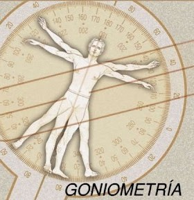
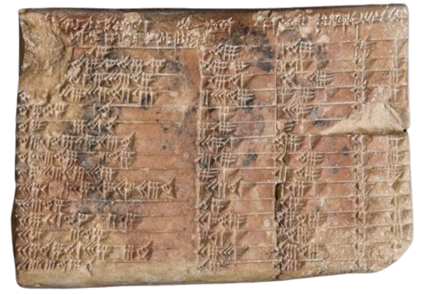
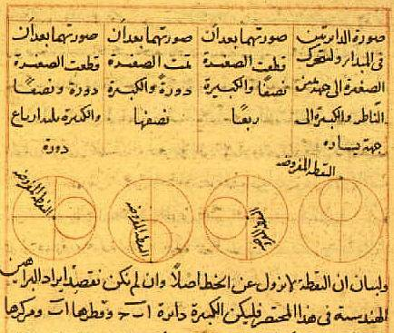
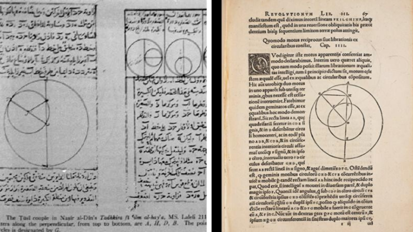
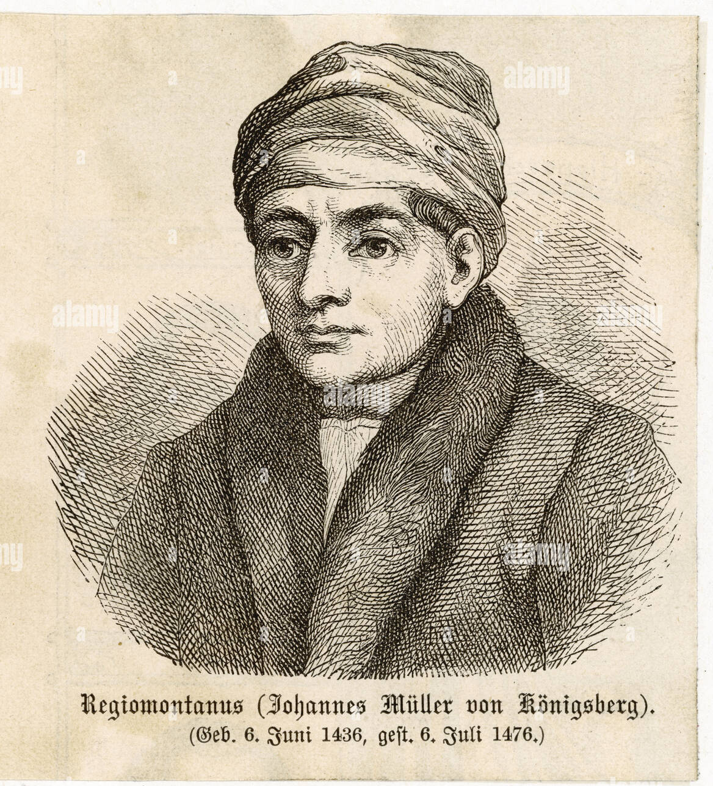
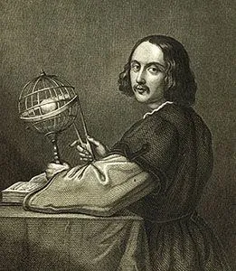
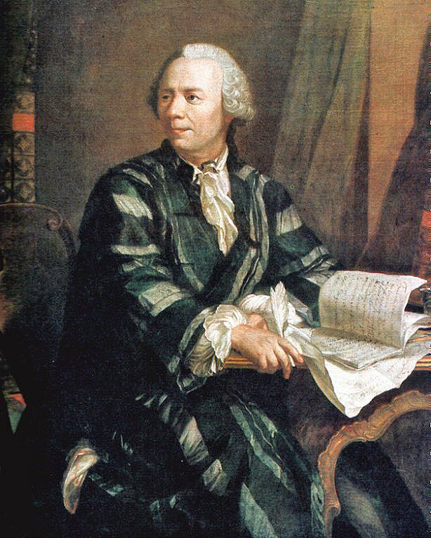

La storia della goniometria, che è il ramo della matematica che si occupa dello studio degli angoli e delle loro funzioni trigonometriche, ha radici antiche e ha subito un lungo processo di sviluppo nel corso dei secoli

La storia della goniometria, che è il ramo della matematica che si occupa dello studio degli angoli e delle loro funzioni trigonometriche, ha radici antiche e ha subito un lungo processo di sviluppo nel corso dei secoli

Le prime tracce di concetti goniometrici risalgono agli antichi Babilonesi e Egizi, che utilizzavano le conoscenze sulle proporzioni degli angoli per scopi astronomici e geometrici. Tuttavia, i primi sviluppi significativi si ebbero nella Grecia antica con matematici come Ipparco e Tolomeo, che studiarono gli angoli e le relazioni tra i lati e gli angoli nei triangoli.

In India, matematici come Aryabhata e Brahmagupta svilupparono ulteriormente i concetti goniometrici, introducendo nuove funzioni trigonometriche e fornendo tavole dei valori trigonometrici. Aryabhata, in particolare, definì per la prima volta il seno e il coseno nella forma moderna e fornì tavole di valori per queste funzioni.

Nel periodo medioevale, i matematici musulmani come al- Khwārizmī, al-Wafāʾ, e Omar Khayyam ampliarono e raffinarono i lavori dei loro predecessori greci e indiani, sviluppando nuove relazioni e identità trigonometriche e fornendo tavole di valori trigonometrici più accurate.

Nel Rinascimento europeo, la goniometria subì ulteriori sviluppi con il lavoro di matematici come Regiomontanus e Rheticus, che iniziarono a trattare le funzioni trigonometriche come entità matematiche distinte. La pubblicazione di "De triangulis omnimodus" di Regiomontanus nel 1464 fu uno dei primi trattati europei dedicati interamente alla trigonometria.


Nel corso dei secoli successivi, la goniometria continuò a evolversi
con i contributi di matematici come Eulero, Taylor, Gregory e
Maclaurin. Leonardo Eulero, in particolare, stabilì la moderna
trattazione analitica delle funzioni trigonometriche e introdusse la
celebre formula di Eulero.

La trigonometria è un ramo della matematica che si occupa dello studio delle relazioni tra gli angoli e i lati dei triangoli, nonché delle funzioni trigonometriche e delle loro proprietà. Le funzioni trigonometriche più comuni sono seno, coseno e tangente, ma vi sono anche funzioni trigonometriche inverse come l'arcoseno, l'arcocoseno e l'arcotangente. La trigonometria ha numerose applicazioni pratiche in campi come la navigazione, l'ingegneria, l'architettura, l'astronomia, la fisica e molti altri. Essa fornisce gli strumenti necessari per misurare e calcolare angoli, lunghezze di segmenti, altezze e distanze, nonché per analizzare e comprendere i fenomeni periodici e ciclici.